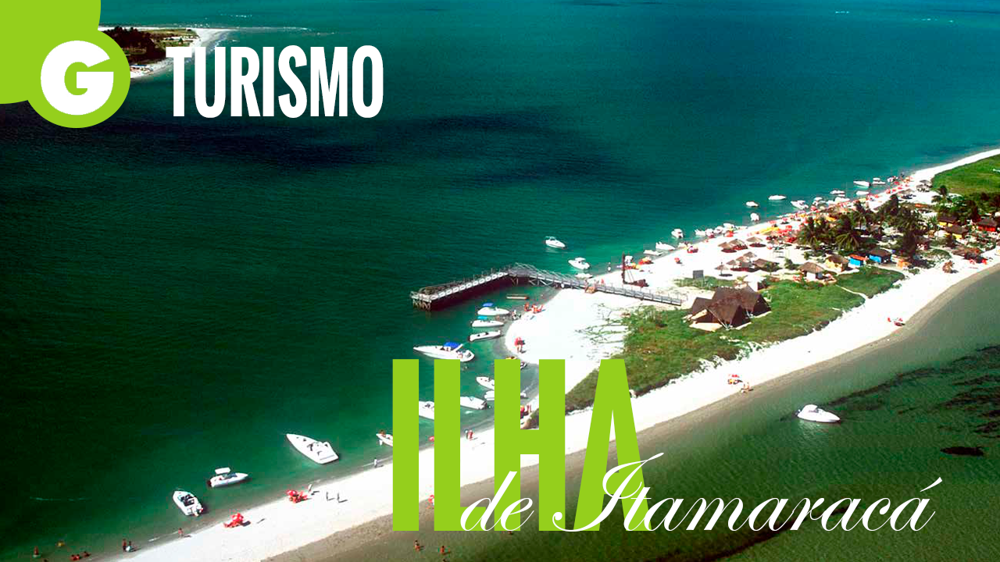

GUIA TURISTICO DE PERNAMBUCO
Ilha de Itamaraca- Recife/PE

Turismo na Ilha de Itamaracá
Distante cerca de quarenta quilômetros do , a ilha oferece ao turismo praias de águas calmas, com coqueiros, piscinas naturais, recifes e bancos de areia. Também é procurada para a prática de esportes náuticos.